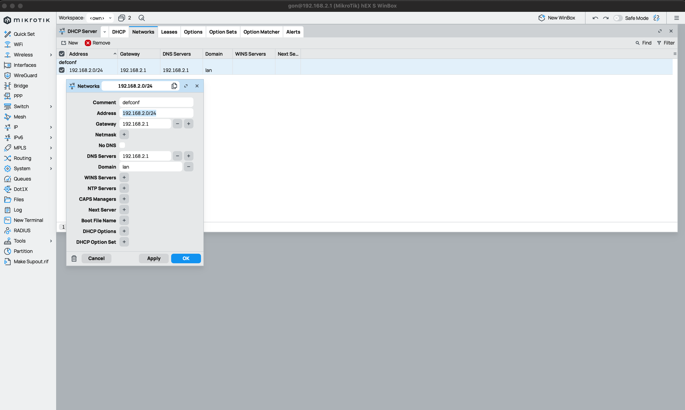
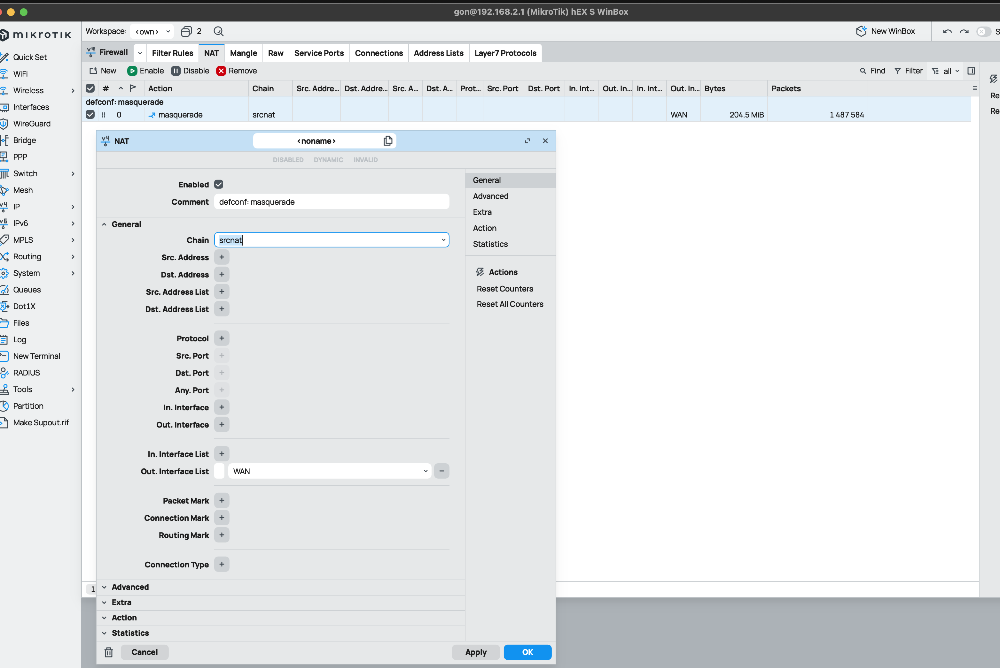
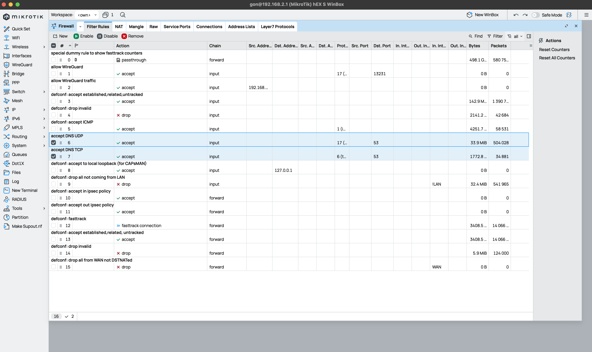
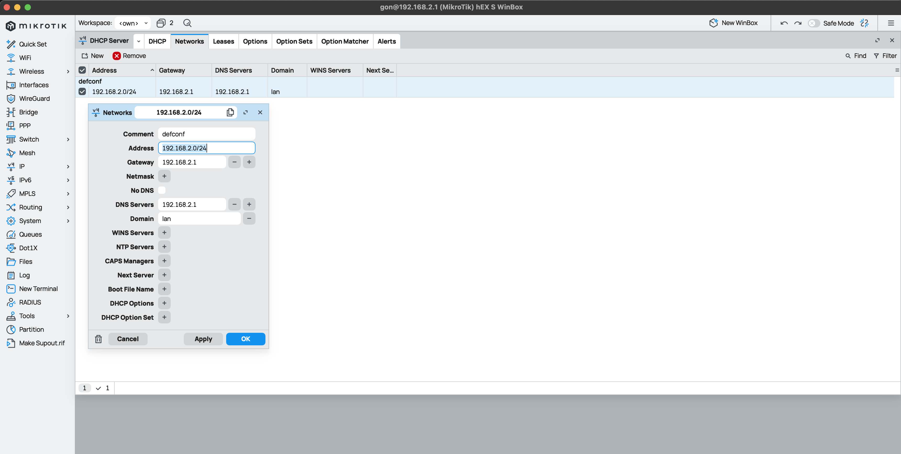
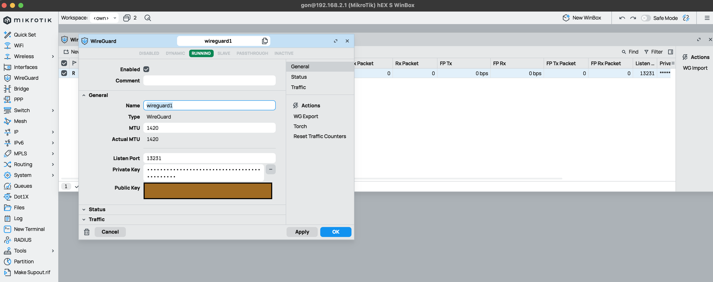

Networking
Tutorials and Guides
Configure Router Mikrotik Replacing Router HGU Movistar/O2
This guide explains different steps for configure my router Miktrotik hEX S replacing Movistar/O2 router HGU. this one will be used as ONT only.
Home Network Map
 This is the network map which I configured following this guide.
This is the network map which I configured following this guide.
Hard Reset
This is optional. I did it because I configured this router years ago and I didn't remember which CIDR I've configured and credentials for login on it:
- With unplugged router, press "Reset" button and plug it again.
- Release the button when green SFP LED starts flashing to reset RouterOS configuration to defaults. More info
- After router reboots, I can access to router config with IP
192.168.88.1and credentialsusername: adminand no password. We need to modify our IP and set another inside CIDR192.168.88.0/24
Change default IP address
Before start to configure anything, ust to reminder that we can manage a mikrotik router with a GUI like WinBox o WebFig, or using a command line terminal. I recommend to use WinBox but I added CLI commands for apply same config just doing copy-paste.
WinBox
- Go to IP > Addresses
- Select interface with name
bridge - Modify Address and Network. In this case:
- Address:
192.168.2.1/24 - Network:
192.168.2.0 - Click on Apply and OK

- Go to System > Reboot
CLI
Setting up a new Default IP for router on bridge interface using its id which is 0
ip/address/print where interface=bridge
Columns: ADDRESS, NETWORK, INTERFACE
# ADDRESS NETWORK INTERFACE
;;; defconf
0 192.168.88.1/24 192.168.88.0 bridge
ip/address/set numbers=0 address=192.168.2.1/24
ip/address/print where interface=bridge
Columns: ADDRESS, NETWORK, INTERFACE
# ADDRESS NETWORK INTERFACE
;;; defconf
0 192.168.2.1/24 192.168.2.0 bridge
Change HGU mode to bridge
We need to change how our Movistar/O2 HGU router is working. At the moment is working as ONT + Router. We want to change it its mode to just working as ONT.
- Connect to HGU web panel http://192.168.1.1/
- Disable DHCP service and Wi-Fi
- Change mode form "Multipuesto" to "Monopuesto"
- Connect cable from
eth1port of this router toeth1port of Mikrotik router
Configure VLAN
Movistar/O2 uses VLANs for offer data traffic, VoIP and TV services. We just need data traffic which its VLAN ID is 6
WinBox
- Go to Interfaces > Select tab VLAN
- Click on New
- Set next parameters/config:
- Name:
vlan_internet_movistar - MTU:
1492 - VLAN ID:
6 - Interface:
ether1 - Click on Apply and OK

CLI
interface/vlan/add name=vlan_internet_movistar mtu=1492 vlan-id=6 interface=ether1
interface/vlan/print
Flags: R - RUNNING
Columns: NAME, MTU, ARP, VLAN-ID, INTERFACE
# NAME MTU ARP VLAN-ID INTERFACE
0 R vlan_internet_movistar 1492 enabled 6 ether1
Configure PPPoE Client (WAN)
PPPoE (Point-to-Point Protocol over Ethernet) is used by many ISP, Movistar/O2 too. Configuring our Mikrotik with PPPoE we're establishing an individual and authenticed session with Movistar, which will provide me a publick IP address.
WinBox
- Go to PPP
- Click on New > PPPoE Client
- On tab/section General:
- Name:
internet_movistar - Interface:
ether1 - On tab/section Dial Out:
- User:
adslppp@telefonicanetpa - Password:
adslppp - Enable option
Add Default Route - Click on Apply and OK

CLI
interface/pppoe-client/add name=internet_movistar interface=ether1 user=adslppp@telefonicanetpa password=adslppp add-default-route=yes disabled=no
interface/pppoe-client/print
Flags: X - disabled, I - invalid; R - running
0 R name="internet_movistar" max-mtu=auto max-mru=auto mrru=disabled interface=ether1 user="adslppp@telefonicanetpa>
password="adslppp" profile=default keepalive-timeout=10 service-name="" ac-name="" add-default-route=yes
default-route-distance=1 dial-on-demand=no use-peer-dns=no allow=pap,chap,mschap1,mschap2
Configure DHCP Server on LAN
Configure DHCP range IP which router Mikrotik will lease to different hosts. Mikrotik offer a DHCP Server configured on virtual interface bridge.
I just want to set range IP.
WinBox
- Go to IP > DHCP Server
- Select tab Networks and select network with name
defconf: - Address:
192.168.2.0/24 - Gateway:
192.168.2.1 - DNS servers:
192.168.2.1 - Click on Apply and OK

- Go to IP > Pool
- Select IP pool named
dhcp-default: - Address:
192.168.2.10-192.168.2.254 - Click on Apply and OK

CLI
ip/dhcp-server/network/set numbers=0 address=192.168.2.0/24 gateway=192.168.2.1 dns-server=192.168.2.1
ip/dhcp-server/network/print
Columns: ADDRESS, GATEWAY, DNS-SERVER
# ADDRESS GATEWAY DNS-SERVER
;;; defconf
0 192.168.2.0/24 192.168.2.1 192.168.2.1
ip/pool/set numbers=0 ranges=192.168.2.10-192.168.2.254
ip/pool/print
Columns: NAME, RANGES, TOTAL, USED, AVAILABLE
# NAME RANGES TOTAL USED AVAILABLE
0 default-dhcp 192.168.2.10-192.168.2.254 245 8 237
Configure NAT on Firewall
Just check if a NAT rule for Masquerade is configured
WinBox
- Go to IP > Firewall
- Select tab NAT
- Check if a rule exists with next config:
- On General
- Chain:
srcnat - Out. Interface List:
WAN
- Chain:
- On Action
- Action:
masquerade
- Action:
- Checkbox Enabled marked
If not exists, creates a new one with this config.


CLI
ip/firewall/nat/add chain=srcnat action=masquerade out-interface=WAN comment="defconf:masquerade"
ip/firewall/nat/print
Flags: X - disabled, I - invalid; D - dynamic
0 ;;; defconf: masquerade
chain=srcnat action=masquerade out-interface-list=WAN ipsec-policy=out,none
Configure DNS Server
Configure router Mikrotik as DNS server
WinBox
Configure DNS server
- Go to IP > DNS
- On Servers add next DNS servers:
1.1.1.11.0.0.18.8.8.88.8.4.4
- Check option Allow Remote Requests
- Cache Max TTL:
06:00:00(Optional)
Add Firewall rules for DNS requests
- Go to IP > Firewall
- Check or Add a rule allowing DNS traffic for TCP and UDP
- Click on New:
- Chain:
input - Protocol:
tcp - Dst. Port:
53 - Action:
accept
- Chain:
- Click on Apply and OK
- Click on New:
- Chain:
input - Protocol:
udp - Dst. Port:
53 - Action:
accept
- Chain:
- Click on Apply and OK
- Check both new rules are after rule allowing ICMP requests 
Configure DNS by DHCP clients
- Go to IP > DHCP Server
- Go to tab Networks
- Select network
defconf - DNS Servers:
192.168.2.1(Mikrotik local IP) - Domain:
lan - Click on Apply and OK 
CLI
ip/dns/set servers="1.1.1.1,1.0.0.1,8.8.8.8,8.8.4.4" allow-remote-requests=yes cache-max-ttl=6h
ip/dns/print
ip/dns/print
servers: 1.1.1.1
1.0.0.1
8.8.8.8
8.8.4.4
dynamic-servers:
use-doh-server:
verify-doh-cert: no
doh-max-server-connections: 5
doh-max-concurrent-queries: 50
doh-timeout: 5s
allow-remote-requests: yes
max-udp-packet-size: 4096
query-server-timeout: 2s
query-total-timeout: 10s
max-concurrent-queries: 100
max-concurrent-tcp-sessions: 20
cache-size: 2048KiB
cache-max-ttl: 6h
address-list-extra-time: 0s
vrf: main
mdns-repeat-ifaces:
cache-used: 120KiB
Configure WireGuard VPN
Mikrotik supports WireGuard VPNs since RouterOS version 7.1, so we need to upgrade RouterOS before if our version is older. In this case, we configure a VPN connection between router Mikrotik and my Smart PHone but it could be configure with any device which supports WireGuard.
This video help me a lot: Configurar VPN Wireguard - Mikrotik en tu telefono
WinBox
Starting configure a VPN WireGuard server.
- Go to WireGuard > New
- On tab General:
- Name:
wireguard1 - Listen Port:
13231 - MTU:
1420 - Click on Apply and Private Key and Private Key will be generated randomly 
Create Addres IP for new interface
- Go to IP > Addresses > New
- Configure next parameters:
- Enabled: marked
- Address:
192.168.100.1/24 - Network:
192.189.100.0 - Interface:
wireguard1
Create Peers on server. In this case I created a peer for my mobile phone, so I've created a peer on my mobile phone.
- Go to WireGuard
- On tab Peers > New
- Enabled: marked
- Name:
realme_gon - interface:
wireguard1 - Public Key:
<Public Key client created on my mobile phoen when I created a peer there> - Allowed Address:
192.168.100.10/32This IP I assigned on my phone when I created a peer there